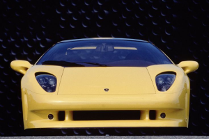

|  |
Lamborghini Cala
|
The Lamborghini Calà is a concept car that was first presented at the 1995 Geneva Motor Show. It was intended as a preview of a possible new entry-level model for Lamborghini, but ultimately the car was not put into production.
The Lamborghini Calà was designed by Fabrizio Giugiaro, son of famed automotive designer Giorgetto Giugiaro, and was based on a shortened version of the Lamborghini Diablo platform. It featured a sleek and modern design with a low profile, sharp angles, and a wedge-shaped silhouette. The car's distinctive scissor doors opened upwards and forwards to provide easy access to the cockpit.
Under the hood, the Lamborghini Calà was powered by a mid-mounted V10 engine, which was capable of producing 400 horsepower and 268 lb-ft of torque. The engine was mated to a six-speed manual transmission, which allowed for precise and responsive gear changes.
The Lamborghini Calà was praised for its performance and design, but ultimately the car was not put into production due to financial difficulties at Lamborghini at the time. Nevertheless, the Calà remains an important part of Lamborghini's history and a beloved concept car among automotive enthusiasts.